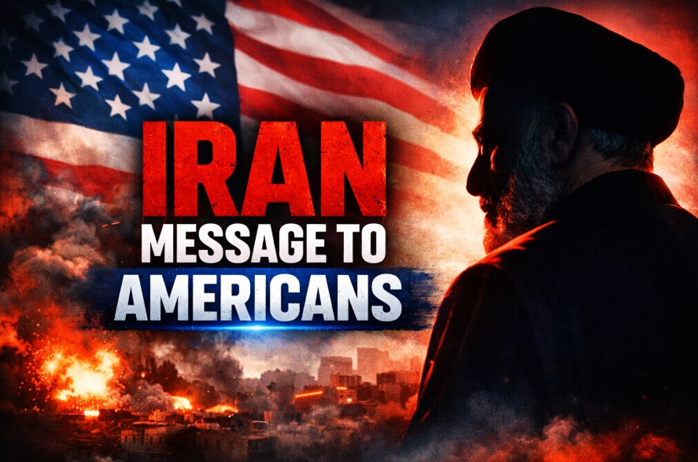

In a rare and direct move, Iran’s President Masoud Pezeshkian addressed not the U.S. government—but the American people themselves.
At a time when the Iran–US conflict is intensifying, this letter attempts to reshape how Americans understand the war, Iran’s intentions, and their own government’s role.
But beyond its tone of peace, the letter carries deeper strategic messaging rooted in decades of geopolitical tension.
---A central theme of the letter is the separation between governments and people.
Pezeshkian emphasizes that Iran does not view ordinary Americans as enemies, but rather sees the conflict as one driven by political decisions.
By doing this, Iran attempts to humanize itself in the eyes of Americans—something that has historically been difficult due to decades of adversarial narratives.
---The letter directly challenges whether U.S. involvement in the conflict actually serves American interests.
It raises questions such as:
In democratic systems, public sentiment can shape policy. Iran appears to be leveraging this dynamic.
---A significant portion of the letter focuses on history.
Iran revisits key events:
These are presented as the foundation of Iran’s mistrust toward the United States.
However, this narrative is selective.
It does not fully address Iran’s own actions, including:
The letter highlights the broader consequences of war—not just military, but economic.
Pezeshkian warns that continued conflict will:
Iran understands that its strongest leverage is not direct military confrontation, but its ability to influence global energy flows.
---Iran sits near one of the most critical energy chokepoints in the world—the Strait of Hormuz.
Even limited disruption in this region can impact global oil prices significantly.
This shifts the nature of the conflict:
It becomes less about battlefield victories—and more about economic pressure.
---The letter serves multiple strategic purposes:
This is not unusual.
Modern conflicts increasingly involve narrative control alongside military action.
---Iran’s open letter is not simply a message of peace—it is a carefully constructed communication strategy.
It combines:
And this letter is part of that battlefield.